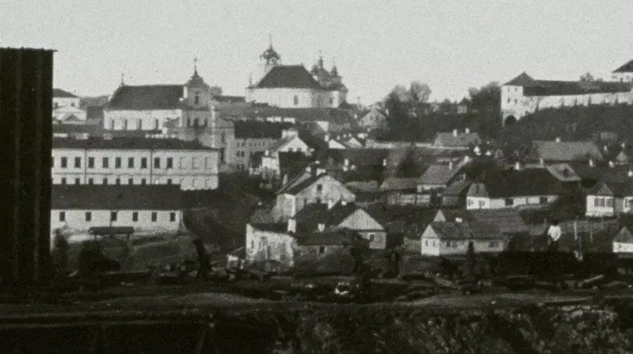

m10



в 1861-м в Гродно приехал венгерский мастер Антал Рорбах, нанятый фиксировать процесс прокладки магистрали Петербург — Варшава. на фото высокий берег города (первое фото города).
Объявление 2026 года Годом белорусской женщины — это не просто календарный жест или дань традиции. Это, прежде всего, акт признания и осмысления той колоссальной роли, которую женщина играет в судьбе Беларуси. Вглядываясь в историческую перспективу и современность, мы видим, что женщина здесь была не просто хранительницей очага, но и созидательницей, воином, интеллектуалом и нравственным камертоном нации. Когда мы произносим «белорусская женщина», перед глазами встают сразу несколько символических образов. Первый — это наша мать, чей образ воспет в песнях и поэмах. Это она, склоняясь над колыбелью, передавала ребенку не только тепло, но и родное слово. В этом смысле женщина стала главной хранительницей белорусской идентичности в самые трудные времена. Второй образ — труженица. Беларусь — страна, пережившая не одну войну, восстававшая из руин. И если мужчина был солдатом, то женщина была тем,кто в тылу поднимал промышленность, восстанавливал города и работал на полях. «Женщина с вожжами в руках» — это не метафора из советского прошлого, а реальный портрет наших бабушек, которые вынесли на своих плечах тяжесть послевоенного возрождения. Сегодня этот образ трансформировался: женщина осваивает высокие технологии, управляет предприятиями и ведет науку вперед, сохраняя при этом удивительное трудолюбие. Третий образ — хранительница . В эпоху глобализации и стремительных перемен именно женщина часто остается тем звеном, которое связывает поколения. Она помнит рецепты бабушкиных драников, знает, как вышить рушник для свадьбы сына, и умеет создать уют там, где, кажется, для этого нет никаких условий. В современном мире, разрываемом противоречиями, эта способность «собирать» семью и создавать вокруг себя атмосферу любви становится настоящим искусством выживания для общества в целом. Однако Год женщины — это не только праздник, но и время для решения накопившихся вопросов. Важно, чтобы красивые слова о почитании женщины подкреплялись реальными делами: доступностью жилья для молодых семей, качественной медициной и созданием условий, при которых женщина могла бы гармонично совмещать карьеру и семью. Подводя итог, хочется сказать, что Год белорусской женщины — это зеркало, в которое смотрится нация. Смотримся в него и мы. Если мы видим там мудрую, сильную, красивую и добрую женщину — значит, у страны есть не только славное прошлое, но и достойное будущее. Ведь какова женщина — таково и продолжение рода, таков и нравственный климат в обществе. Пусть этот год станет временем благодарности нашим матерям, женам, сестрам и дочерям. Временем, когда каждый из нас скажет простое, но такое важное «спасибо» за тот тихий подвиг
Этот год — это не простой год. Это возможность остановиться в бесконечной гонке будней и сказать «спасибо». Сказать его за все: за уют в доме(который мы часто принимаем как должное),за руки мамы( которые умеют и успокоить, и направить),за мудрость бабушки, в историях которой — целая эпоха и за многое другое, за что мы благодарны женщинам Женщина — это тот самый тихий огонь, который согревает, но при этом дает достаточно света, чтобы видеть путь. Без всех забот, без той особой энергии, которую несет в себе женский род, мир стал бы не таких приятным и красочные, который делает наши женщины И в этом году, посвященном женщине, мы учимся видеть эту силу. Понимать, что равноправие — что она может дать более лучше совет чем ты,имеет право управлять чем нибудь как и мужчина. Равноправие — это про признание ценности. Ценности твоей улыбки, мама. Ценности мудрого совета, бабушка. Ценности вдохновения, которое дарит нам каждая из вас. Этот год дает нам шанс осознать простую истину: уважение к любому полу начинается с уважения к своим корням, к той женщине, которая подарила нам жизнь. И если мы научимся ценить это в своей семье, мы сможем построить общество, где ценят и уважают каждого человека, просто за то, что он есть.
Мы живём в эпоху технологий. Повсюду нас окружают многочисленные, но поверхностные тренды. Сегодня молодёжь ставит перед собой очень важным вопросом: как выбрать себе ориентир? Меняясь под давлением моды, мы часто забываем о главном - о духовных ценностях. Каждая новизна - открытия, машины, технологии - проходит проверку временем. Так и человек раскрывается по‑настоящему лишь тогда, когда его личность стоит на прочном фундаменте духовности и нравственности. Ценности прошлого помогают нам помнить и не повторять ошибок, сохраняя гармонию в сердце и душе. Семейные традиции, передающиеся из поколения в поколение, становятся поддержкой в жизни каждого. Мы должны не только бережно хранить их, но и дополнять своим опытом, чтобы они оставались живыми и современными. Традиции учат нас быть дружными, поддерживать друг друга и находить силы для движения вперёд.
Меня зовут Шпаркович Глеб. И эта шкатулка — моя сокровищница. Вот, например, этот значок. Он говорит то, что я — часть большой команды, «Гимназия №10 имени Митрополита Филарета (Вахромеева) г. Гродно». Для меня это сокровище №1. Моя семья — это мой тыл и моя моральная поддержка. Она дарит мне тепло, заботу и уверенность в завтрашнем дне. Вместе мы делим радости и преодолеваем трудности, а каждый момент рядом наполняет жизнь смыслом и счастьем. Этот диплом - напоминание, об упорствев спорте и учёбе. А эти очки - символ моей любви к плаванию. Оно учит силе духа, терпению, дисциплине и тому, что даже маленькие шаги приводят к большой цели. Но настоящие сокровища не лежат мёртвым грузом — они прорастают в делах и остаются в памяти людей. Вот этот «Путеводитель» — часть нашего совместного с медиацентром проекта «Таинственный шёпот Гродно». Мы не просто фотографировали знакомые улочки и дворики. Мы искали и показывали ту скрытую поэзию, тот самый «шёпот», который хранят старые стены. Мы пытались увидеть город глазами тех, кто жил здесь многие годы назад. В жизни я стараюсь придерживаться трёх золотых правил, которые помогают мне двигаться вперёд и сохранять внутреннюю гармонию. Первое, самое важное правило: Карта интересов: Всегда выбирай дело, от которого загораются глаза. На втором месте стоит: Карта команды: Одно сокровище — это всего лишь богатство, а разделённое с друзьями — оно становится бесценным. Доверяй и разделяй успех с другими. И наконец, третье правило: Карта наследия: Спрашивай себя: «Что останется после моего проекта?» Если ответ есть — ты на верном пути».
помоги старшему поколению поднести сумки, уступить место в общественном транспорте
присоединитесь к местной благотворительной организации или приюту
выслушайте друга, которому тяжело, и предложите свою поддержку
пожертвуйте одежду, книги или игрушки тем, кто в них нуждается
сделайте кому-то приятное, сказав добрые слова
предложите помощь в мелких делах, таких как вынос мусора, уход за растениями или уборка дома
помогите очистить парк или общественное пространство от мусора
поделитесь своими знаниями с людьми, которые хотят узнать что-то новое
пишите статьи, создавайте видео или посты, которые вдохновляют других